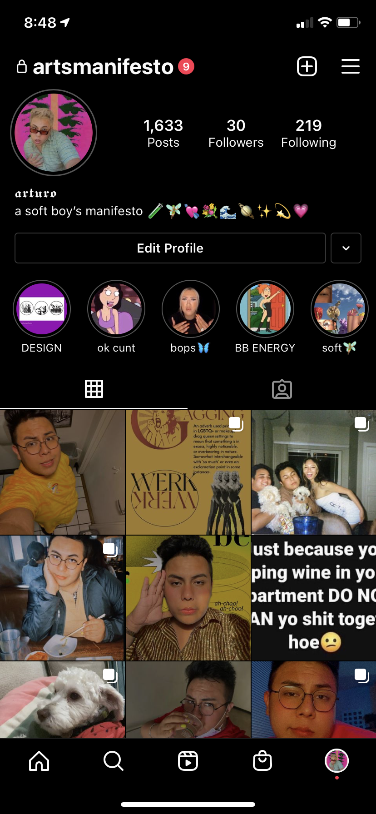
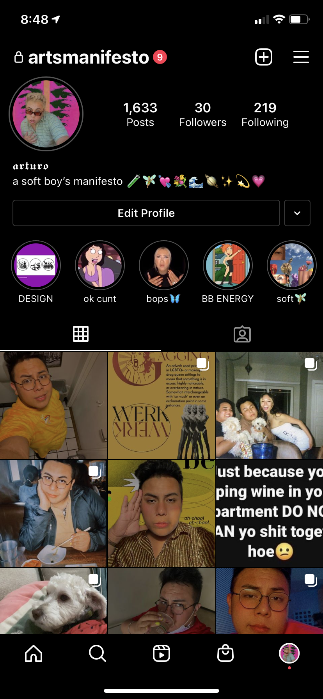

Art has around seven social media accounts, some public and, some private. Art has two Instagram accounts, one public and one private. His public Instagram has mostly many pictures of himself mostly. They have, as of today, 560 followers and sixteen posts, three-story highlights. His private account has 1625 posts and only thirty followers.
 

According to Art’s Linkedin, they are currently a third-year at the University of San Francisco and are working on their Bachelor of Arts in Advertising and Design. Art has many jobs as of current. Art is currently a legal fellow for the Office of Civic Engagement and Immigrant Affairs for San Francisco City Hall, skincare expert at Kiehl’s Apothecary, residential advisor at the University of San Francisco and, a freelance designer for Spot on Creative.
Art’s Twitter is also public with 67 followers and 16.2k tweets and 9287 likes. He is born on July 13th, 2001, and joined Twitter in 2016. Art’s following mostly consist of queer folx and mutual friends. His bio reads “a soft boy’s manifesto | he/they”.
Art’s TikTok is private, unlike his other social media accounts. They have 75 followers and 1579 likes on TikTok. The number of posts is unknown.
Art’s Apple Music is fairly heavily used. Art has several playlists public to their profile including, “C*NT”, “diva”, “lanagasm”, “tweak” and “men are social constructs”. He has 0 followers and is also not following anyone. His top artists are Lana Del Rey, Celine Dion, Kylie Minogue, Kali Uchis, Rico Nasty, Charli XCX, Lady Gaga, and SOPHIE. Art’s top five albums of 2021 so far are Chemtrails Over the Country Club, Sin Meido, SAWAYAMA, Chromatica, and Ultraviolence.